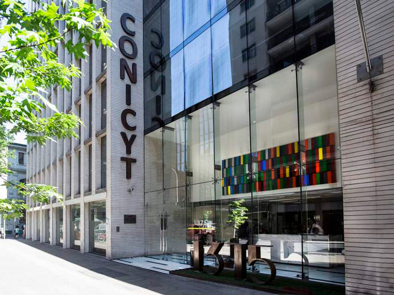

Nos encontramos en un momento clave para la ciencia en nuestro país. En agosto de 2018 se promulgó la Ley 21.105 que crea el Ministerio de Ciencia, Tecnología, Conocimiento e Innovación (MinCTCI), lo cual dio al gobierno un año de plazo para dictar los decretos con fuerza de ley que fijarán las plantas y determinarán la fecha de puesta en marcha del nuevo ministerio y de la futura Agencia Nacional de Investigación y Desarrollo, el servicio público continuador de la Comisión Nacional de Investigación Científica y Tecnológica (Conicyt), que estará a cargo de ejecutar las políticas del MinCTCI.
En este contexto, en diciembre pasado el Presidente de la República designó como primer titular de la nueva cartera a Andrés Couve, sobre cuyos hombros recae la responsabilidad de echar a andar la nueva institucionalidad. Pero, a la espera de ese momento, la actual sigue funcionando. Tal es así que la semana pasada, en una ceremonia en el Palacio de La Moneda, se anunció la renovación completa de los integrantes del Consejo de Conicyt, a quienes corresponderá, bajo la presidencia de Mariane Krause, acompañar la transición de la ya cincuentenaria Comisión a la nueva Agencia.
Esta Agencia será pieza fundametal en el ordenamiento del sistema de ciencia, tecnología, conocimiento e innovación (CTCI), ya que en ella, además de los programas que hoy opera Conicyt (incluido Fondecyt, actualmente dirigido por dos consejos autónomos), se integrarán la Iniciativa Científica Milenio (ICM), hoy radicada en el Ministerio de Economía, y otros instrumentos de Corfo orientados a la innovación de carácter tecnológico que requiere el sector productivo. Ese ordenamiento, en cualquier caso, es sólo el punto de partida del desafío de la transición.
Otro aspecto relevante de esta etapa será dotar a la Agencia de una estructura más moderna y eficiente que la actual de Conicyt, que luego de muchos años de crecimiento inorgánico cuenta con 13 programas y 66 concursos anuales. Fondecyt es uno de ellos, pero –como dije– ha tenido una dirección completamente autónoma de Conicyt, lo que a veces ha afectado la operación o abierto encendidos debates sobre la coordinación o coherencia de ciertas políticas. Por otro lado, los instrumentos de la ICM tienen un alto grado de duplicidad en sus objetivos con otros de Conicyt y Fondecyt; y a ello se suma que la Gerencia de Desarrollo Tecnológico de Corfo realiza concursos para la creación de centros y consorcios tecnológicos, con un alto grado de similitud con los anteriores.
Tengo confianza en que el nuevo Consejo de Conicyt contará con una mirada amplia de política pública para completar la orgánica institucional de CTCI que tanto hacía falta al país. En mi opinión, junto con ayudar a establecer una estructura administrativa ágil y menos burocrática que la actual para la Agencia, el Consejo es uno de los entes más indicados para asesorar a las nuevas autoridades en el debate y diseño de políticas muy relevantes que deberá definir el ministerio con relativa urgencia.
Una de ellas dice relación con el desarrollo de centros de investigación, tecnología e innovación que permitan, con mirada sistémica, poner a la CTCI al servicio de las necesidades del país y sus regiones, haciéndose cargo de materias tan relevantes como el desarrollo de la energía solar o el impacto del cambio climático en las diversas actividades sociales y productivas, por nombrar solo algunas. Chile merece y requiere contar con centros científico-tecnológicos con estructuras institucionales sólidas y pensadas en el largo plazo, que justifiquen mayores inversiones del Estado y reúnan de manera virtuosa al sector público, la academia y el sector privado en su constitución, gobernanza y financiamiento.
Urge también definir una política de capital humano avanzado que no solo permita formar más doctores, sino tambén insertarlos adecuadamente en el sistema, a fin de desarrollar las capacidades científico-tecnológicas que el país requiere desde un punto de vista estratégico. Dado que los recursos públicos son finitos y existen múltiples demandas sobre ellos, se debiera avanzar con más decision en la asignación de becas por áreas de interés prioritario en diversos temas de preocupación para el país, desde los desastres naturales hasta el desarrollo productivo, pasando por desafíos en salud, educación o inclusión social. No es posible que el Estado siga otorgando becas de postgrado solo en áreas disciplinarias del interés de los usuarios.
En cuanto al futuro ministerio, celebro con entusiasmo algunos adelantos que ha hecho el ministro Couve en cuanto a crear una unidad destinada a la divulgación de la CTCI y a la promoción de una cultura científica y de innovación, es decir, a potenciar y ampliar el rol del programa Explora de Conicyt. Esto, porque mientras la ciudadanía no perciba la importancia que tiene la investigación en sus vidas, difícil será lograr que el país aumente la inversión en este ámbito.
Archivo: publicado originalmente el 10 de mayo de 2019 en el sitio anterior de la Sociedad (https://socneurociencia.cl/2019/05/10/los-desafios-del-nuevo-consejo-de-conicyt/).